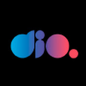

+
Curso em Vídeo
 O Curso em Vídeo, é um renomado canal no YouTube criado e liderado pelo professor Gustavo Guanabara. Este canal oferece uma ampla gama de cursos gratuitos de programação, design, informática e outras disciplinas relacionadas à tecnologia. Gustavo Guanabara é conhecido por sua habilidade em explicar conceitos complexos de forma clara e acessível, tornando o aprendizado mais acessível para milhões de estudantes. Seus cursos abrangem desde linguagens de programação, como Python, até ferramentas de design gráfico e desenvolvimento web. A comunidade em torno do "Curso em Vídeo" é vasta e ativa, oferecendo suporte e recursos adicionais para os alunos. No geral, Gustavo Guanabara e o "Curso em Vídeo" desempenham um papel crucial na democratização da educação em tecnologia e no empoderamento de estudantes em todo o mundo.
O Curso em Vídeo, é um renomado canal no YouTube criado e liderado pelo professor Gustavo Guanabara. Este canal oferece uma ampla gama de cursos gratuitos de programação, design, informática e outras disciplinas relacionadas à tecnologia. Gustavo Guanabara é conhecido por sua habilidade em explicar conceitos complexos de forma clara e acessível, tornando o aprendizado mais acessível para milhões de estudantes. Seus cursos abrangem desde linguagens de programação, como Python, até ferramentas de design gráfico e desenvolvimento web. A comunidade em torno do "Curso em Vídeo" é vasta e ativa, oferecendo suporte e recursos adicionais para os alunos. No geral, Gustavo Guanabara e o "Curso em Vídeo" desempenham um papel crucial na democratização da educação em tecnologia e no empoderamento de estudantes em todo o mundo.
DIO

A Digital Innovation One (DIO) é uma plataforma de ensino online especializada em programação e tecnologia. Com uma ampla gama de cursos ministrados por instrutores experientes, a DIO visa capacitar estudantes e profissionais para carreiras bem-sucedidas no campo da tecnologia. Sua abordagem prática, projetos do mundo real e variedade de cursos gratuitos e pagos a tornam uma escolha popular para quem busca aprender e aprimorar suas habilidades tecnológicas. A plataforma é reconhecida por fornecer conhecimento atualizado e práticas de mercado, preparando seus alunos para os desafios do setor de tecnologia. Também se destaca por sua comunidade ativa, proporcionando um ambiente de aprendizado colaborativo e recursos adicionais para apoiar o desenvolvimento profissional de seus participantes.
CodeAcademy
 O Codecademy é uma plataforma de aprendizado interativo amplamente reconhecida, especializada em programação e desenvolvimento web. Sua abordagem prática e hands-on permite que os alunos aprendam codificação por meio de exercícios interativos e projetos do mundo real, promovendo um aprendizado prático e envolvente. Além disso, a plataforma oferece uma opção Pro, que inclui recursos adicionais, como orientação personalizada, práticas de entrevista e projetos exclusivos. Com uma comunidade ativa e fóruns de discussão, o Codecademy promove a colaboração entre os alunos, proporcionando um ambiente de aprendizado inclusivo e suporte mútuo. Os cursos abrangem uma ampla variedade de linguagens de programação, tecnologias e tópicos, tornando-o um destino abrangente para quem deseja iniciar ou aprimorar suas habilidades de programação.
O Codecademy é uma plataforma de aprendizado interativo amplamente reconhecida, especializada em programação e desenvolvimento web. Sua abordagem prática e hands-on permite que os alunos aprendam codificação por meio de exercícios interativos e projetos do mundo real, promovendo um aprendizado prático e envolvente. Além disso, a plataforma oferece uma opção Pro, que inclui recursos adicionais, como orientação personalizada, práticas de entrevista e projetos exclusivos. Com uma comunidade ativa e fóruns de discussão, o Codecademy promove a colaboração entre os alunos, proporcionando um ambiente de aprendizado inclusivo e suporte mútuo. Os cursos abrangem uma ampla variedade de linguagens de programação, tecnologias e tópicos, tornando-o um destino abrangente para quem deseja iniciar ou aprimorar suas habilidades de programação.
DevMedia
A DevMedia é uma plataforma educacional de destaque no campo da tecnologia da informação e desenvolvimento de software, oferecendo uma ampla gama de recursos, incluindo artigos, tutoriais em vídeo e cursos de alta qualidade. Com uma abordagem abrangente que abrange diversas linguagens de programação, frameworks e conceitos tecnológicos, a DevMedia se destaca como uma fonte confiável para aprimorar habilidades em programação e se manter atualizado nas tendências tecnológicas. Seus cursos, desenvolvidos por especialistas experientes, combinam teoria e prática, preparando eficazmente os alunos para carreiras bem-sucedidas na área de tecnologia.Além disso, a plataforma incentiva a interação e a colaboração em sua comunidade ativa, promovendo o compartilhamento de conhecimento e a aprendizagem contínua.
LearnCafe
O LearnCafe é uma plataforma inovadora que capacita instrutores independentes a criar e compartilhar cursos abrangendo uma ampla gama de tópicos, desde tecnologia e artes até negócios. Com uma comunidade diversificada de instrutores, a plataforma oferece uma variedade de recursos educacionais, tornando-se uma opção valiosa para aqueles que buscam aprendizado com flexibilidade e uma ampla seleção de conteúdo. Os cursos disponíveis no LearnCafe refletem a expertise e os interesses variados de seus instrutores, permitindo aos alunos explorar temas de acordo com suas necessidades e preferências individuais, proporcionando uma abordagem de aprendizado personalizada e enriquecedora.